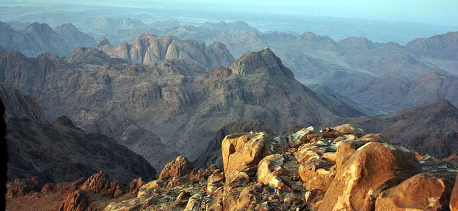
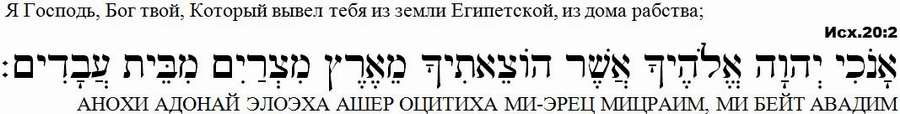
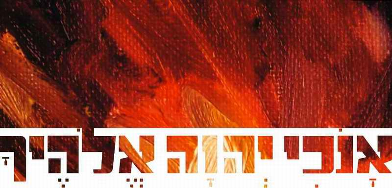
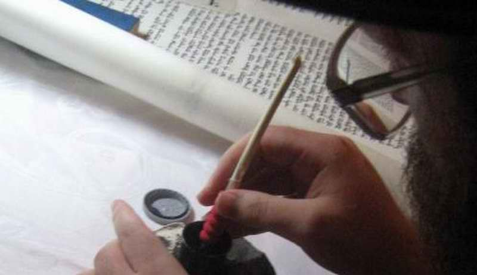
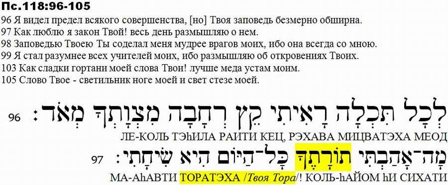

Арт-мидраш · Праздники в Библии
ШАВУОТ - Праздник ДАРОВАНИЯ СВОБОДЫ
Синайское откровение глазами художника. ДЕКЛАРАЦИЯ СВОБОДЫ.
«Я видел предел всякого совершенства, [но] Твое повеление безмерно обширно. (Пс.118:96)

"Совершенная свобода через самоограничение - удивительный парадокс божественного промысла". /Ольга Медведева/
Мы знаем нескольких из художников, что стояли у горы Синай. Вообще там было много художников, но у этих троих мы знаем имена и родословия. Тора свидетельствует также об их уникальном творчестве. Они стояли у подножья в то страшное время, когда гора тряслась и дым, как из печи, и молнии, и голос шофара, и глас с неба: «Я Господь Бог твой… Не делай себе…»
Вот их имена – Бецалель, сын Ури, сын Хура, призванный Творцом неба и земли для устроения святилища Богу Всевышнему. Также и помощник его Аhолиав, сын Ахисамаха, из колена Дана. И дед художника Бецалеля – Хур из колена Еhуда. Этот Хур, по преданию, принес жизнь свою на алтарь пред Господом ради кидуш а-Шем (освящения имени Всевышнего).
Какие мысли владели их умами, когда прогремело вечное:
«Не делай себе кумира и никакого изображения того, что на небе вверху, и что на земле внизу, и что в воде ниже земли; не поклоняйся им и не служи им, ибо Я Господь, Бог твой, Бог ревнитель, наказывающий детей за вину отцов до третьего и четвертого [рода], ненавидящих Меня». (Исх.20:4-5)
Мы знаем о самой первой их реакции. Крик вырвался у народа как из единых уст. Тора сообщает нам их слова – легендарное «наасэ вэ-нишма» (Исх.24:7). И это понятно — было очень страшно и вариантов практически не было.
Но после, когда речение это продолжало кричать к ним, не оставляя и не позволяя продолжать, как ни в чем ни бывало. Эта мысль не давала им покоя… Что должны сделать они со своим искусством? Все, чем они жили до сих пор – заклятое пред Творцом?
Это было три с половиной тысячи лет назад. Что нам до этих древностей?
Различные христианские деноминации решают это «НЕ ДЕЛАЙ…» каждая на свой лад. Но что делать правоверному мессианскому иудею? В Израиле, в среде которого много художников, музыкантов, поэтов и пр., пр., пр., и они все продолжают и продолжют ехать...
***
Декларация СВОБОДЫ. ОСВОБОЖДАЮЩЕЕ Имя
Бог открывается Своему народу и представляется особенным именем. Вообще этот принцип можно видеть многократно, когда Бог открывает Себя в определенном имени. Таких Его имен много. И, конечно, имя, в котором Он открывается в той или иной ситуации связано с контекстом того, о чем дальше идет речь.
Так в этом случае Всевышний открывает Себя под именем - «Я Господь, Бог твой, Который вывел тебя из земли Египетской, из дома рабства...». (Исх.20:2-3). Т.е. Я Бог – ОСВОБОДИТЕЛЬ.
И Он ревнитель, не готовый делить Израиля с кем-либо: «да не будет у тебя других богов пред лицем Моим. (Исх.20:3)». Ты не можешь быть рабом еще кому-то. Это значит, ты должен быть абсолютно свободен – не раб ни кому! Ты должен принадлежать Мне всецело и безраздельно, как написано: «возлюби ВСЕМ сердцем, ВСЕЙ душей, ВСЕЙ крепостью» — ВСЕМ, что есть в тебе.

Если в ПЕРВОЙ ЗАПОВЕДИ Бог выступает под именем ОСВОБОДИТЕЛЯ, все девять последующих за первой заповедей следует понимать именно в контексте этого имени. Исайя (Ис.61:1), раскрывая суть этого имени Бога говорит: «отпустить измученных на свободу … проповедовать пленным освобождение и узникам открытие темницы…».
Значит заповеди, о которых мы говорим, призваны не поработить, но отпустить на свободу.
Какая же это свобода, если мне запрещают?!
Что скажем, стал ли Израиль по исшествии своем из Египта совершенно свободен? Перестали ли отцы наши поклоняться другим богам? Давайте честно! Мы с вами сегодня, причастники завета на лучших обетованиях, завета благодати, — что скажем, действительно все наши боги, все чему мы покланялись в нашем «египте» кануло в небытие? Не имеем ли мы теперь «свободу» поклоняться нашим маленьким и большим «слабостям»?
ЗАПОВЕДЬ Господа не лишила нас свободы и необходимости выбора. Она говорит о другом: до сих пор ты поклонялся множеству богов. И у тебя не было выхода. Ты был рабом им и потому обязан был их умилостивлять, служить, приносить им жертвы. И ты не мог вырваться из их плена.
Но вот тебе заповедь: «да не будет более», Я освобождаю тебя от этого рабства «железной печи» (где приносили человеческие жертвы). ЕСЛИ ХОЧЕШЬ, — будь свободен! Ты не должен им, этим маленьким богам, ничего. Потому что Я - Господь и Бог твой!
И вот еще что – Ты не должен изображать их более! Раньше был обязан (вспомним недавнее наше прошлое, в каких количествах мы изображали коммунистических божков и полубожков). Теперь ты свободен от этого подневольного «творчества». Ты не обязан им служить. А раньше должен был. Раньше ты был не свободен. Теперь Я предлагаю тебе СОВЕРШЕННУЮ СВОБОДУ!
В 10-ти речениях мы видим закон, как бы ограничивающий наши права, свободы (в т.ч. свободу самовыражения и творчества) – это не делай, того — не смей, так не поступай…
Ведь ограничение – это несвобода?! Это пугает людей творчества в отношениях с Богом: религиозный человек – ограниченный человек. Запрет в Торе: «не делай изображения…» — рассматривается часто как непреодолимое для творческого человека ограничение. Там, где нет свободы выражения - нет творчества.
Это создаёт ложное представление о том, что вера и поклонение Творцу всего — ограничивает художника и связывает ему руки, будто он не может творить свободно, связанный многочисленными заповедями, правилами, законами, запрещениями.
«Да не будет у тебя других богов…» — Это ограничение свободы выбора — иметь себе господ, каких ты хочешь?
Что это значит, если я имею «свободу» иметь разных других богов?
Каждый бог – это ограничения (по определению, бог — значит господин (большой ли, малый ли), а ты, стало быть, – его слуга и раб.
В язычестве (где предоставлена «свобода выбора» бога) их, этих богов и полубогов, много. За каждую сферу твоей жизни «отвечает» специальный бог. Так что «свободный» в своем выборе человек – фактически раб со всех сторон, только тем и занятый тем, чтобы угодить и служить всем этим многочисленным господам (своим многочисленным комплексам, страхам, суевериям…). Такой человек обложен со всех сторон, что и речи не может быть о свободной воле.
При том, каждый такой бог весьма ограничен и имеет над собой начальника, а быть подчиненным ограниченному – значит и самому подпасть под двойное ограничение.
торжественное провозглашение Десяти Заповедей в праздник Шавуот
В том то и смысл Закона Божьего не в том, чтобы запретить и ограничить, а, напротив, — разрушить ограничения, которыми мы стеснены…
«Да не будет у тебя других богов…», не делай себе…, и не поклоняйся им», т.е. теперь ты свободен, потому что Я Господь, который освободил тебя (вывел тебя из Египта).
Теперь ты свободен и не должен кланяться всем этим богам.
Теперь ты ничего им не должен и никто не заставит тебя изображать их и служить им.
Потому что «Я Господь»!
Итак, 2-ое речение – это не крепостное право – напротив, — это вольная грамота! Как если бы у вас на глазах порвали все ваши долговые обязательства, которые вы выплатить не в состоянии, и за это вы были приговорены к пожизненному заключению. Но пришел Тот, Кто заплатил вместо вас и выпустил вас на свободу…
«Анохи адонай… ше оцитиха ми бейт авадим» - «Я Бог, выведший тебя из дома рабства» (первая заповедь) — об этом Своем деянии Бог повторяет вновь и вновь, что указывает на важность этого имени — «Бог освобождающий из рабства».
***
АКТ ТВОРЧЕСТВА

Словом Бог творил вселенную и все, что населяет ее. "Да будет..." – это творение из ничего.
Выводя Израиля из Египта, Бог из раба творит Себе свободный народ. «Да не будет...» - говорит Творец с неба. И этим Своим речением творит новое. Десять великих заповедей – не ограничения, не остановка, не препятствие – это величайшее творчество Бога. И этим Своим творчеством Он приглашает Израиля в Свое творение.
Давид - в высшей степени творческий, одаренный во всех отношениях, талантливый в музыке, и поэзии, архитектуре, и скульптуре видел в законе не рабское ограничение свободы творчества, а сладость и совершенство. У заповеди совершенной он учился творчеству...
Слова Давида: «Я видел предел всякого совершенства, [но] Твоя заповедь безмерно обширна». (Пс.118:96)

Все, что кажется нам совершенным, там где мы видим свободу – все это имеет предел и ограничено. И только ПОВЕЛЕНИЕ Всевышнего, по неведению порой воспринимаемое нами за ограничение, одно лишь и дает неограниченную свободу творчества.
Совершенный закон освобождает и усовершает исполняющего его.

Что же те трое – Бецалель сын Ури, его дед Хур из колена Еhуда и Аhолиав сын Ахисамаха? Они поняли нечто глубокое в СИНАЙСКОМ ОТКРОВЕНИИ, что возвело их творчество на уровень высшего пророческого вдохновения.
***
автор: Эфраим Калиш /TORAART/